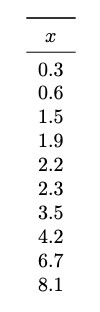
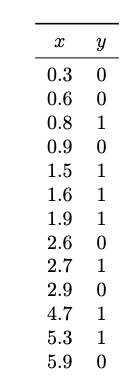
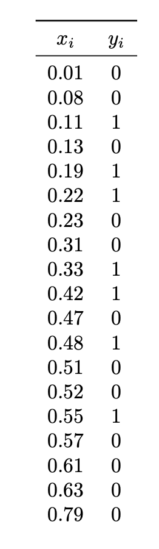

Problems tagged with "histogram estimators"
Problem #034
Tags: histogram estimators
Consider the data set of ten points shown below:

Suppose this data is used to build a histogram density estimator, \(f\), with bins: \([0,2), [2, 6), [6, 10)\). Note that the bins are not evenly sized.
Part 1)
What is \(f(1.5)\)?
Part 2)
What is \(f(7)\)?
Problem #035
Tags: histogram estimators
Consider this data set of points \(x\) from two classes \(Y = 1\) and \(Y = 0\).

Suppose a histogram estimator with bins \([0,1)\), \([1, 2)\), \([2, 3)\) is used to estimate the densities \(p_1(x \given Y = 1)\) and \(p_0(x \given Y = 0)\), and these estimates are used in the Bayes classifier to make a prediction.
What will be the predicted class of a new point, \(x = 2.2\)?
Solution
Class 0.
Problem #036
Tags: density estimation, histogram estimators
Suppose a density estimate \(f : \mathbb R^3 \to\mathbb R^1\) is made using histogram estimators with bins having a length of 2 units, a width of 3 units, and a height of 1 unit.
What is the largest value that \(f(\vec x)\) can possibly have?
Problem #048
Tags: histogram estimators
Consider this data set of points \(x\) from two classes \(Y = 1\) and \(Y = 0\).

Suppose a histogram estimator with bins \([0,2)\), \([2, 4)\), \([4, 6)\) is used to estimate the densities \(p_1(x \given Y = 1)\) and \(p_0(x \given Y = 0)\).
What will be the predicted class-conditional density for class 0 at a new point, \(x = 2.2\)? That is, what is the estimated \(p_0(2.2 \given Y = 0)\)?
Solution
1/6.
When estimating the conditional density, we look only at the six points in class zero. Two of these fall into the bin, and the bin width is 2, so the estimated density is:
Problem #049
Tags: histogram estimators
Suppose \(\mathcal D\) is a data set of 100 points. Suppose a density estimate \(f : \mathbb R^3 \to\mathbb R^1\) is constructed from \(\mathcal D\) using histogram estimators with bins having a length of 2 units, a width of 2 units, and a height of 2 units.
The density estimate within a particular bin of the histogram is 0.1. How many data points from \(\mathcal D\) fall within that histogram bin?
Problem #094
Tags: histogram estimators
In this problem, consider the following labeled data set of 15 points, 5 from Class 1 and 10 from Class 0.

Suppose the class conditional densities are estimated using a histogram estimator with bins: \([0, 3), [3, 5), [5, 6),\) and \([6, 10)\). Note that the bins are not all the same width!
In all of the parts below, you may write your answer either as a decimal or as a fraction.
Part 1)
What is the estimate of the Class 0 density at \(x = 3.5\)? That is, what is the estimate for \(p(3.5 \given Y = 0)\)?
Part 2)
Using the same histogram estimator, what is the estimate of \(\pr(Y = 1 \given x = 3.5)\)?
Solution
Video explanation: https://youtu.be/0WFYpsDapC8
Problem #104
Tags: histogram estimators
Let \((\nvec{x}{1}, y_1), \ldots, (\nvec{x}{n}, y_n)\) be a set of \(n\) points in a binary classification problem, where \(\nvec{x}{i}\in\mathbb{R}^2\) and \(y_i \in\{0, 1\}\).
Suppose a classifier is trained by estimating the class-conditional densities with histograms using rectangular bins and applying the Bayes classification rule.
True or False: it is always possible to achieve a 100\% training accuracy with this classifier by choosing the rectangular bins to be sufficiently small. You may assume that no two points \(\nvec{x}{i}\) and \(\nvec{x}{j}\) are identical.
Solution
True. Video explanation: https://youtu.be/A1fBjOnjs5E
Problem #111
Tags: bayes classifier, histogram estimators
In this problem, consider the following labeled data set of 19 points, 7 from Class 1 and 12 from Class 0.

Suppose the class conditional densities are estimated using a histogram estimator with bins: \([0, .25), [.25, .5), [.5, 75),\) and \([.75, 1.0)\).
In all of the parts below, you may write your answer either as a decimal or as a fraction.
Part 1)
What is the estimate of the Class 0 density at \(x = 0.6\)? That is, what is the estimate \(\hat p(0.6 \given Y = 0)\)?
Part 2)
Using the same histogram estimator, what is the estimate \(\hat\pr(Y = 1 \given x = 0.35)\)?
Part 3)
What is the estimate of the marginal density of \(x\) at \(x = 0.1\)? That is, what is \(\hat p(0.1)\)?
Part 4)
Let \(\hat p(x \given Y = 0)\) be the histogram density estimate for the Class 0 conditional density. What is
Problem #119
Tags: histogram estimators
Consider the following data set of 14 points in \(\mathbb R^2\). Each point has a label in \(\{ 1, -1 \}\). Points from Class 1 are marked with \(\times\) and points from Class -1 are marked with \(\bullet\).

Suppose the class-conditional density estimates are computed from this data using a histogram density estimator using the \(1 \times 1\) bins shown in the figure above.
If these estimates are used in place of the true class-conditional densities in the Bayes classifier, what will be the training error of the classifier? That is, what percentage of the data above will be misclassified? You may leave your answer as a fraction or a decimal.